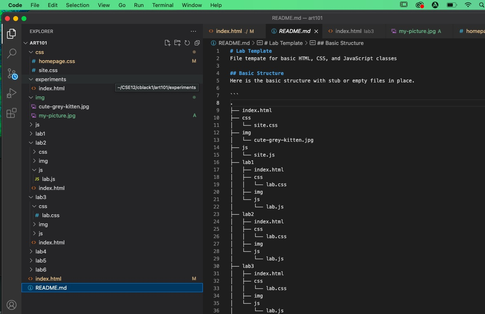

Lab 3 - File Structures
Challenge
The purpose of this lab was to create a file structure and add index.html files to it.
Problems
The only difficult problem that arose was adding my pictures to the file. Everything else in the assignment did not seem to be a problem for me
Reflection
This assignment made me realize how important it is to have a organized file structure. I will for sure use a template like this on my own in the future outside of this class.
Results
If you look above you can see my Lab 3 Webpage, if you look below you can see a screenshot of the file structure:
